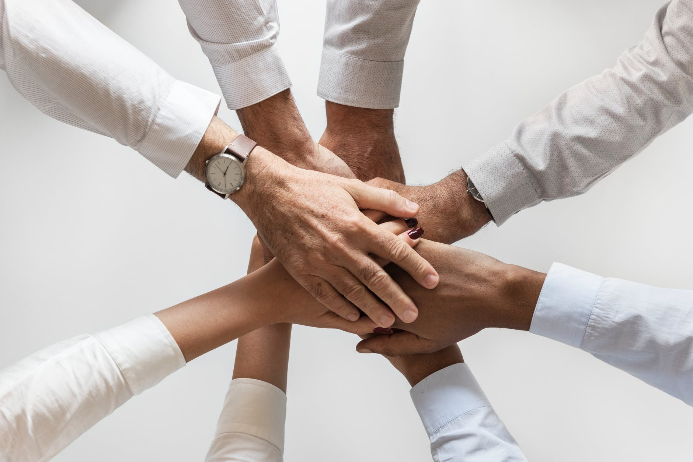

According to dictionary.com, citizenship is the position or status of being a citizen of a particular country
. As long as one possesses certain legal documents, they are by definition a citizen. But what does good citizenship actually mean?
RESPONSIBILITY: As citizens of the United States, we are given a lot of freedom that people in other countries lack. The Constitution states that the government serves the people, rather than the people serving the government. The government functions to protect its citizens, and to create and enforce laws that protect our rights. However, the government can only function if its citizens actively participate. This is our responsibility as members of the United States - to educate ourselves and vote.
HONESTY: Honesty is a far-reaching virtue. It is not only crucial for a society to function, but it also plays a big role in one’s personal happiness. If you are a person others can trust, they will confide in you and open themselves to you. As citizens, we must have integrity - both to ourselves and to our community and country. A society that flourishes is made of people who keep to their word and strive for truth.
COMPASSION: Americans are one of the most diverse groups of people in the world. We are people of all ethnicities, races, and religions. In the face of these differences, it's easy to forget that we are all human. We must have compassion to fellow human beings and reach out to them. As citizens of the United States, we live more comfortably and have less worries than people in many other countries. We must use our privilege to work for improving the lives of those less fortunate than us.
RESPECT: Especially in today's time, America is dangerously divided. The 2016 presidential election especially heightened social and political tensions. People lashed out against each other and spewed hate from both directions. If we can respect other opinions even if we disagree with them, we can build a better atmosphere and foster communication.
COURAGE: There is more than one way to show bravery. Some of the most courageous are those who risk their lives to fight for our country. War veterans deserve our respect and appreciation, because our freedom today depends on their sacrifices. However, there is another crucial aspect of courage that is not physical. It takes tremendous courage to stand up for what one believes in, especially when he is alone. But when people do, they create conversation that breaks the echo chamber of ideas that people so often surround themselves with.
HUMILITY: We often forget that we know much less than we think we do. People get into heated and ineffective arguments when both sides are so convinced the other side is wrong, they fail to communicate anything to each other. If we recognize that many things are less certain than they seem and that every viewpoint has flaws, we will be able to spread ideas and make our country a better place.

image from pexels.com
Recently, I witnessed a girl who was sitting alone at a lunch table. Another girl, who was happily sitting with a group of friends, went up to her and invited her to their table. Although this act was very small, is was the act of a good citizen. The girl had compassion and humility, because she understood that no one wanted to or deserved to be alone. This gesture was a small step in building a more inclusive and positive community.